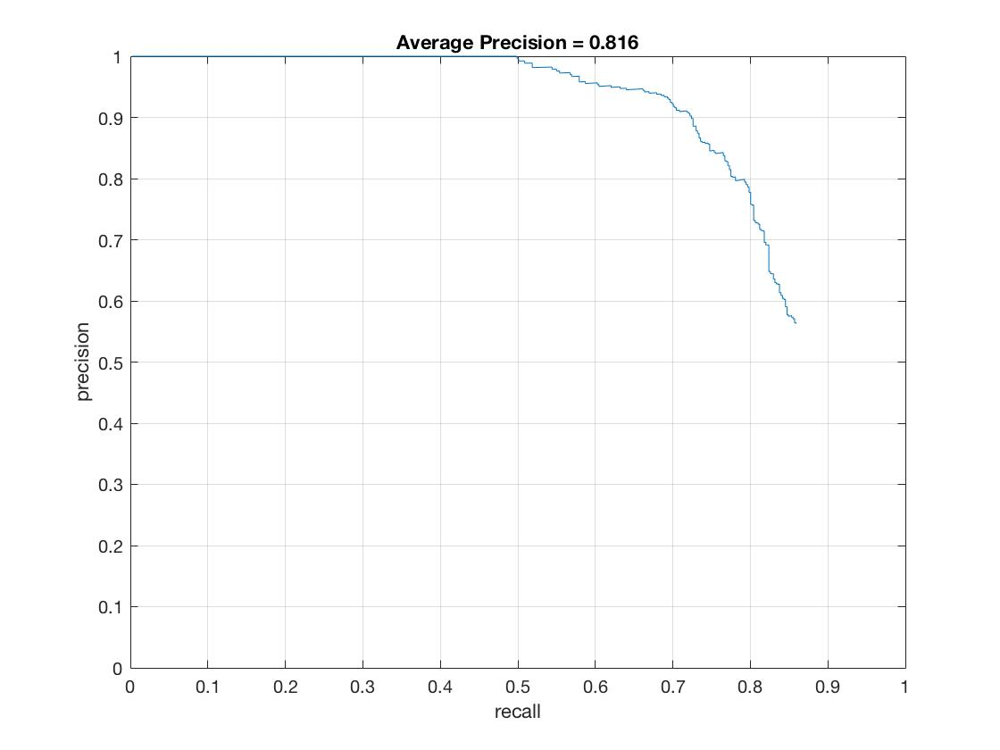

In this project, our objective was to train a classifier to detect faces using a sliding window approach and leveraging histograms of orienteed gradients (HOG). In order to detect faces at multiple scales of an image, we have adapted our sliding windows to operate on multiple scales of the image.
For getting positive features, I decided to very simply read in images and accumulate a positive dataset of hog descriptions of each of the pre-cropped images. One interesting suggestion that I leveraged was that according to ____, where flipping positive training images of pages leverages the symmetric aspect of faces and therefore augment our training data to a certain extent. By doing so, my training accuracy increased from __ to ___.
However, processing the negative images proved to be more interesting, as I sampled descriptions at varying scales of the provided images. I used a scaling factor of 0.7 as per the suggestion of Professor Hays. After applying the appropriate labels to my dataset, I trained my linear SVM with a lambda of 0.0001. After running my detector several times, I was consistently returning more false positives than I would have liked- thus I went ahead and implemented hard negative mining using the provided test data set.
%My Random Window approach for scanning through neg features
while (imHeight >= tempSize && imWidth >= tempSize)
for fS = 1 : ceil(featuresSampled * currScale .^ 2)
% top left coordinates of feature
r = ceil(rand * (imHeight - tempSize) + 1);
c = ceil(rand * (imWidth - tempSize) + 1);
imWindow = img(r : r + tempSize - 1, c : c + tempSize - 1);
feature = reshape(vl_hog(imWindow, cellSize), 1, []); %linearize into row vec
features_neg(featIndex,:) = feature; % append row vec
featIndex = featIndex + 1;
end
img = imresize(img, scaleFactor);
[imHeight, imWidth] = size(img);
currScale = currScale * scaleFactor;
end
Down the road, I believe it would be worth investigating the benefits of fine tuning the final sampling of negative features such that we get a relatively even amount of samples from each range of magnification. For instance, for magnification from 1x to 2x we could take num_sample/2 features, from 2x to 3x we could take num_sample/4, from 3x to 4x we could take num_sample/8, etc... This way we avoid the case where we have a disproportionate number of samples from a single scale range.
As I attempted to Hard Mine Negatives, I realized that the professor's comment about how hardmining negatives doesn't necessarily help with frontal facial detection and linear classifiers. After experimenting with non linear classifiers and realizing how computationally inefficient that route would be, I decided to slightly minimize the effect of these hardmined negatives. I did so by only taking into account the negatives that my classifier was quite confident about (more confident than average confidence of false positives). Also notably, this was relatively computationally very expensive to run on the large dataset of negative examples as well as to lower my detection threshold to properly leverage the benefits of the technique. Nevertheless, this would be something that I would cache in future interations of the detector, as the consistent increase in runtime accuracy is worth the longer initial training duration.
[~, hnConfs, ~, hnFeatures] = run_detector(non_face_scn_path, w, b, feature_params);
hnFeatures = hnFeatures(find(hnConfs > mean(hnConfs)), :);
trainingLabels = [trainingLabels; (ones(size(hnFeatures, 1), 1) .* -1)];
trainingData = [trainingData; hnFeatures];
[w b] = vl_svmtrain(trainingData', trainingLabels, lamda);
|  |